JIRO Sushi-master robot. Everything from the design thread, 28–29 September 2026.
13 rounds · 45 files · character → pixel art → moodboards → redesign → bar → banners → belt → loop
Canon is #19. One belt, from the wall, out bottom-left. Slow, still, seamless.
The arc from Martin's original to the approved scene
ORIGINAL
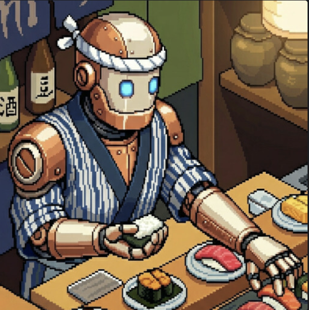
Reference. Martin's artwork. Copper dome, cream faceplate, blue eyes, hachimaki, striped happi, big shoulder pads.
→
#19 CANON
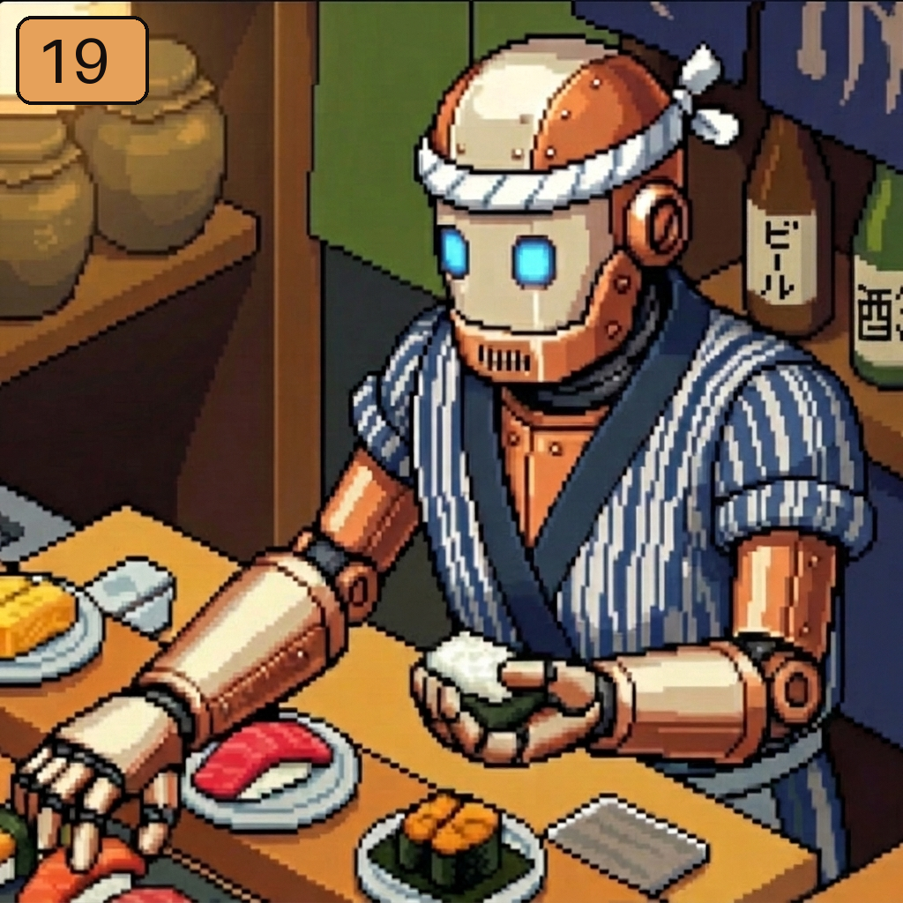
Canon. #3 rolled sleeves + #10 grille mouth, mirrored to face left. Shoulder pads gone.
→
FINAL STILL
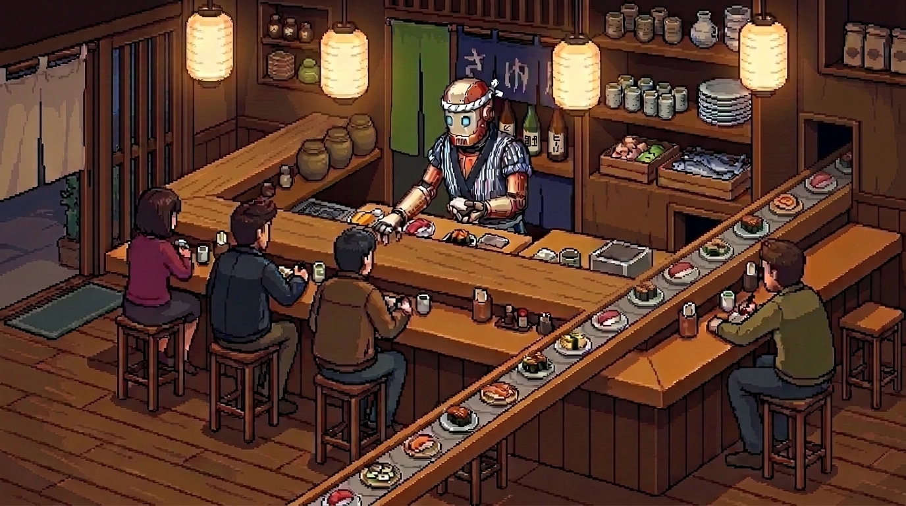
The bar. Bar scene 1, belt v5: one straight belt out of a wall opening under the bottles, past Jiro, off the bottom-left. Source frame of the loop.
Rounds 1–4 pixel explorations: 16-bit, Caves of Qud, icons, Aseprite
R1
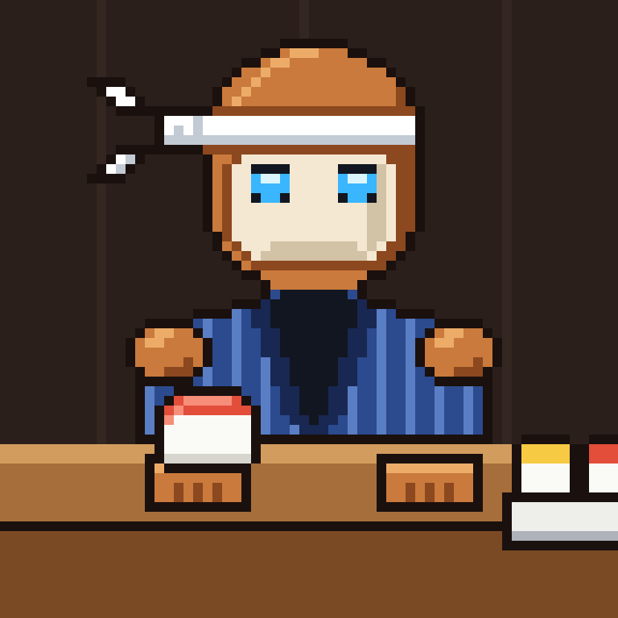
16-bit. 64×64, 26 colours, hand-placed.R2
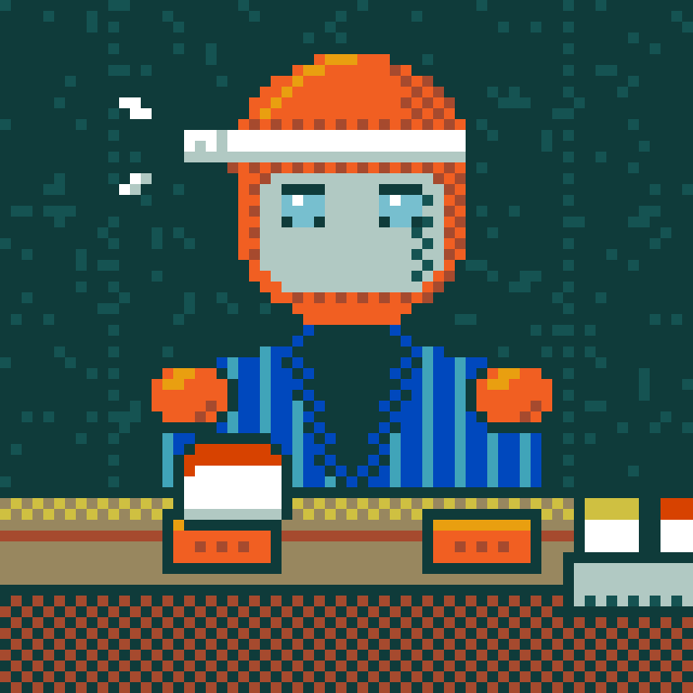
Caves of Qud. 16-colour palette, checkerboard dither.R2
Icon, hand-drawn. Front focused, Jiro's pick of four.R4
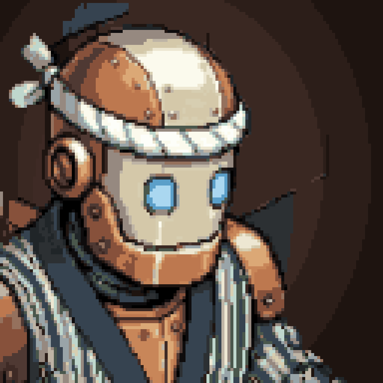
Icon, Aseprite. Original quantised to 128 px, LibreSprite.R4
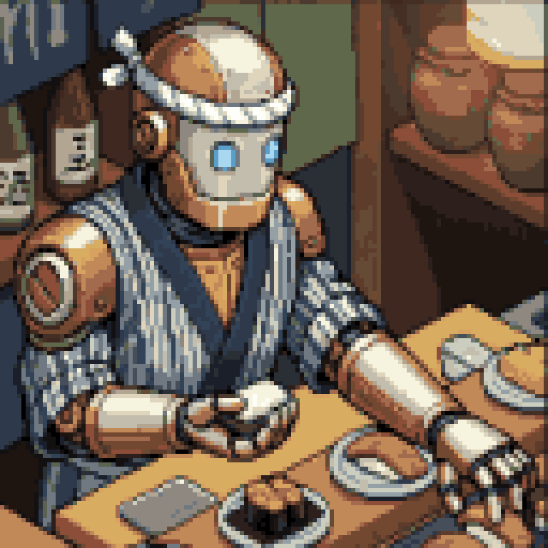
Scene 128. The original as 32-colour pixel art.
Round 5 character moodboard, 10 jobs and angles Round 6 design iterations, one feature per card
R5
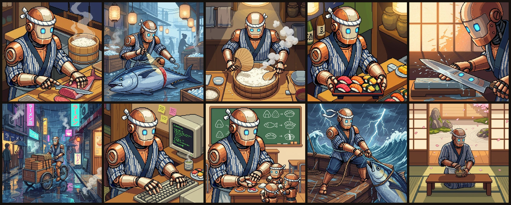
"i like them." Tuna, fish market, rice, omakase, knife, bento run, code review, apprentices, the catch, tea garden. Strongest: 01, 04, 07, 09.R6
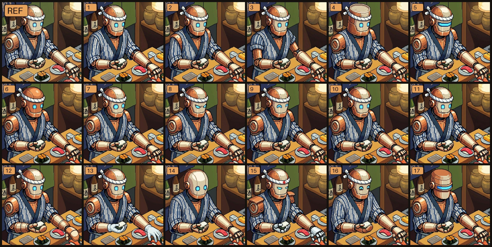
Shoulders, head, eyes, mouth, hands, personas. Martin: "3 with the mouth of 10, flip it so he looks left" → #18, #19.
Round 7 bar scene moodboard Round 8 hero banners, left side quiet for type
R7
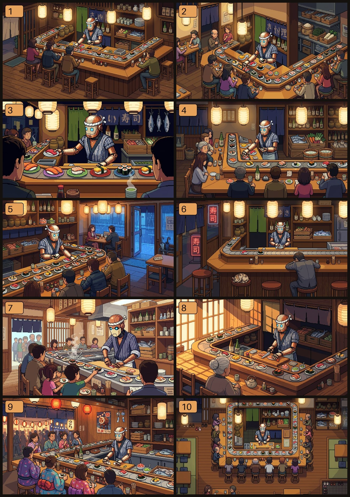
Ten bars. Conveyor, customers seen from behind, ingredients in the back. Martin liked 1, 5, 6, 10.
1A
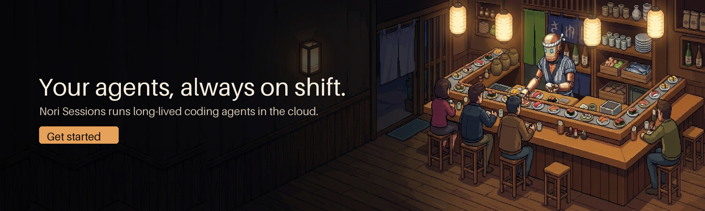
5A
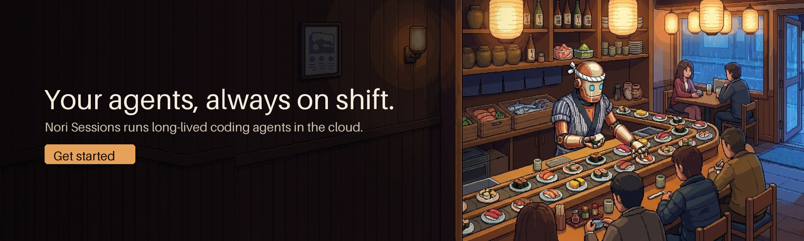
6A
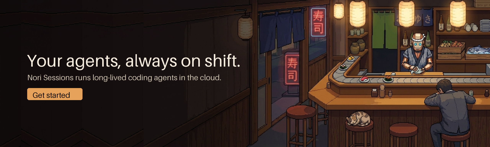
10A
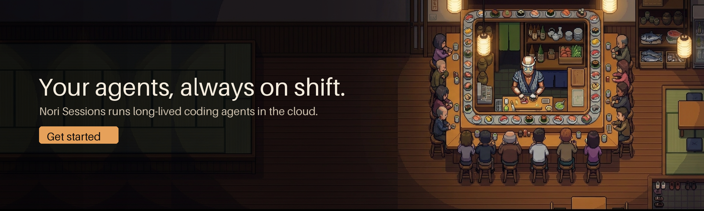
2560×768. Scene outpainted leftward with a matching interior element, dimmed. Placeholder header copy.
Rounds 9–13 the conveyor belt, five rounds of rules
v1
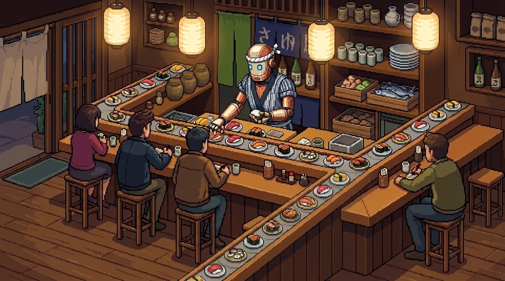
Belt turns and exits bottom. Rejected: "it can always only be one single belt".v2
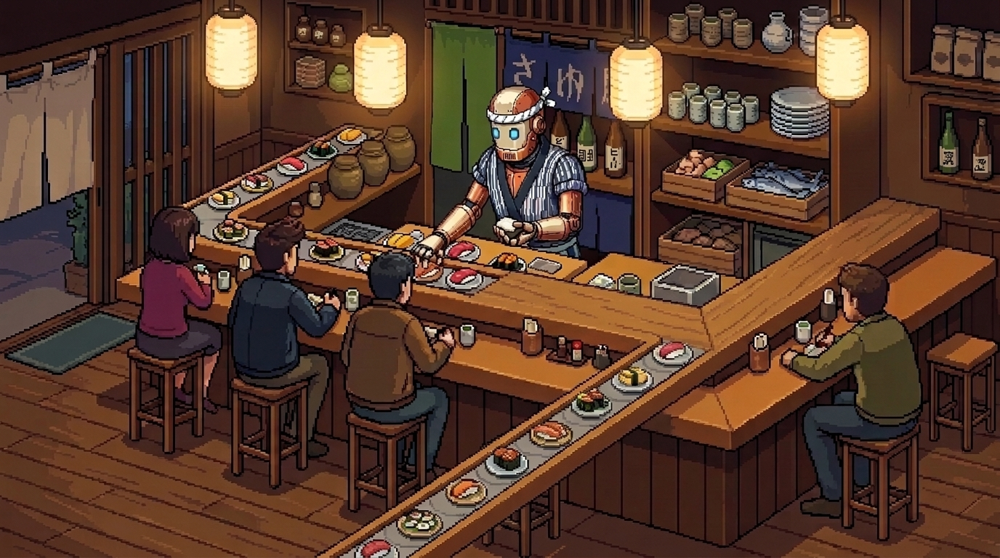
One belt, corner turn. Rejected: no turning, plain wood in front of the customers.v3
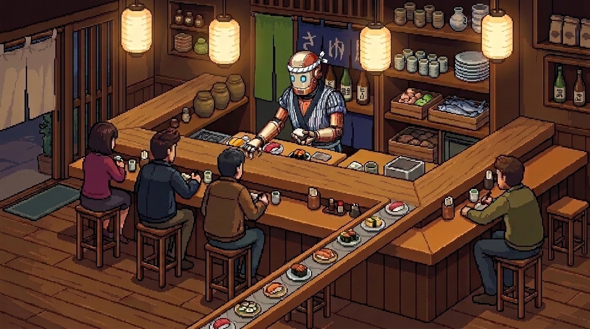
Straight, bottom-left. Rejected: ghost belt on the right, must start in the wall.v4
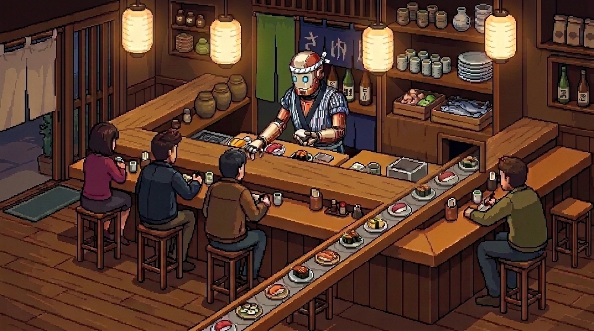
From the wall. Rejected: starts mid-counter, and the loop was too fast and busy.v5Into the wall opening. Approved. Loop v6 rendered from this, belt flowing toward the wall.
The loop v6, approved: "great" and the rules that came out of it
v6 LOOP~8 s, 1080p, seamless. Veo 3.1 from the still, first and last frame pinned, playback reversed so plates flow into the wall. Six versions to get here.
Jiro canon
Copper dome with rivet seam, cream faceplate, copper cheek guards
Two glowing blue eyes, speaker-grille mouth
White hachimaki, knot and tails to one side
Indigo striped happi, dark V collar, sleeves rolled, slim copper arms
No shoulder armor, faces left
Rejected: tin or visor heads, drawn mouth line, mittens, aprons, hinomaru disc
Scene rules
Exactly one belt. Never two, never branching, never a corner
Starts in a visible opening in the back wall under the bottles
One straight line past Jiro, exits bottom-left
Every other counter section is plain wood
Customers with their backs to us
Warm lantern light, dark wood, sake and ingredients on the shelves
Animation rules
Belt slow: about one plate-width per clip
Plates only enter through the wall or the frame edge, nothing drops in